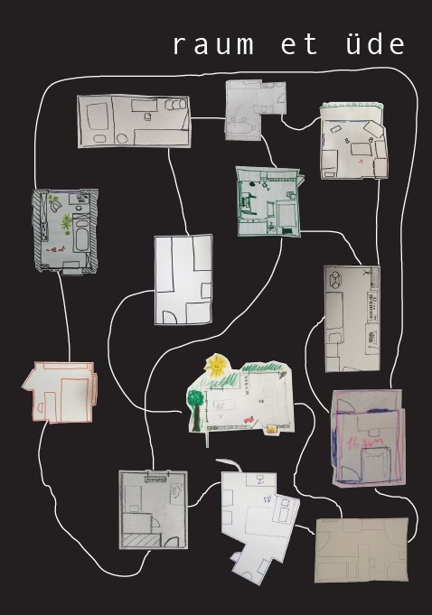

Projects using Überton

Raum et ude
This composition has been developed by participants of the academy course "Co(s)mic Sounds".
A virtual space is explored with sounds and instruments and sometimes extended into dimensions higher than three through virtual effects and instruments.
Read the booklet for more information (German only).
Download Booklet
Download Audio